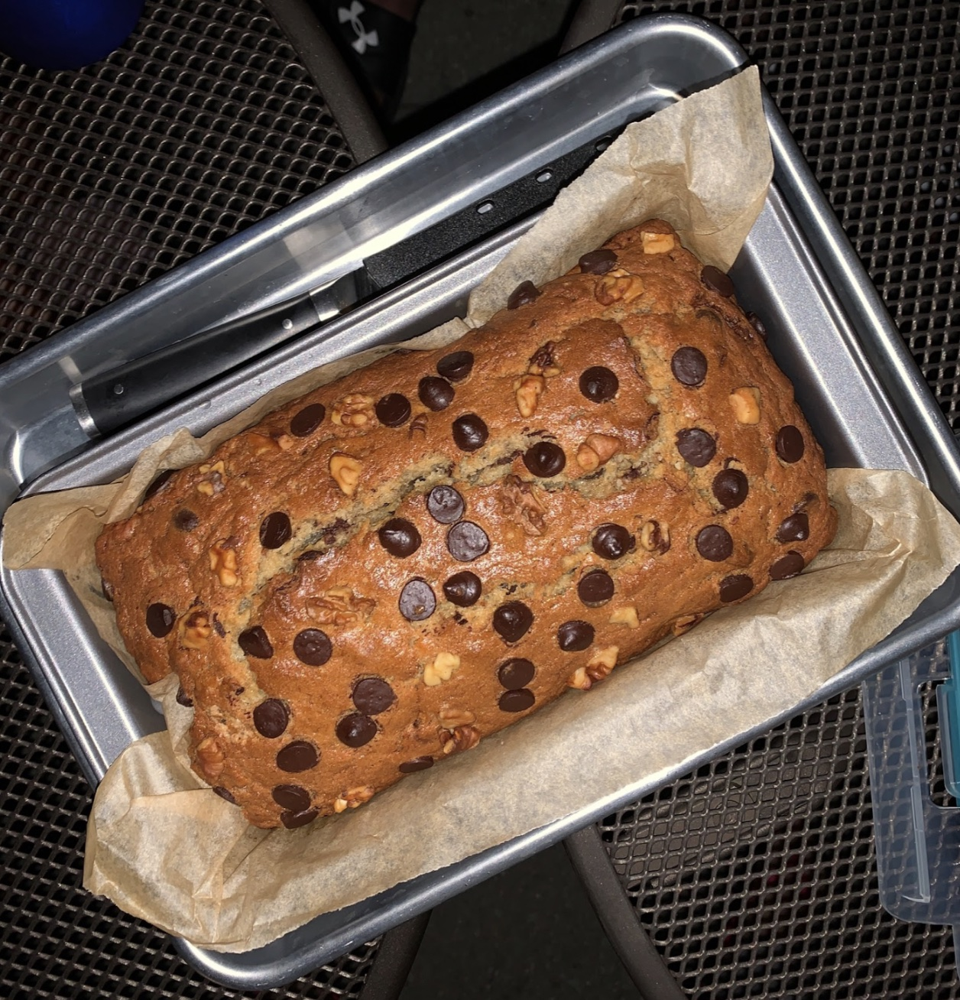
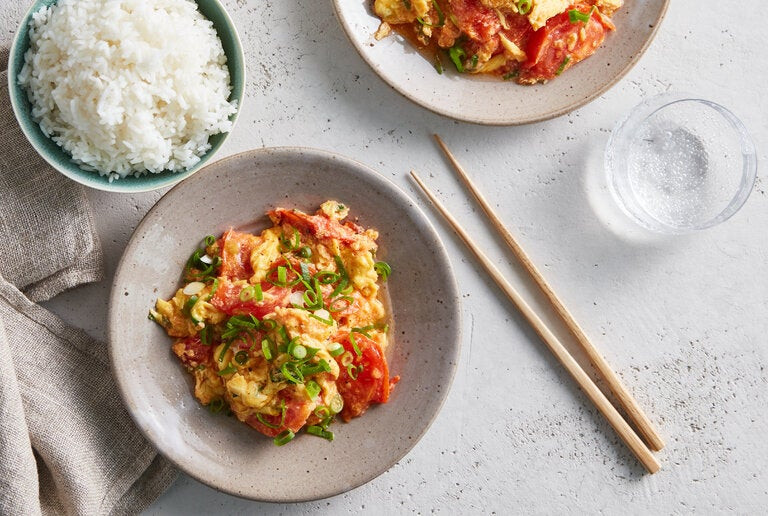
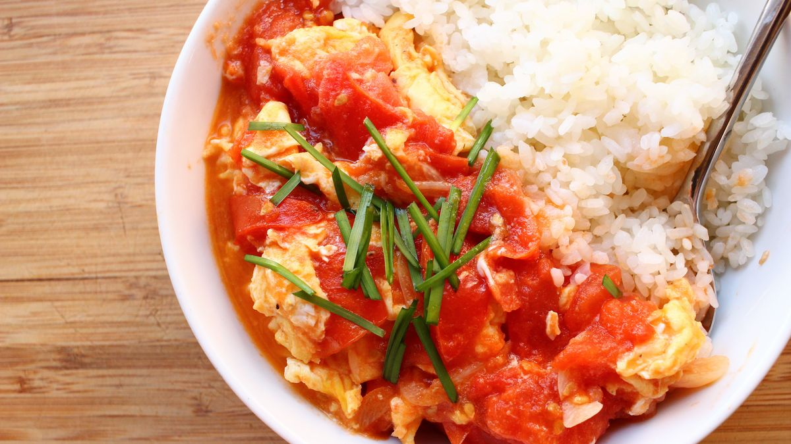
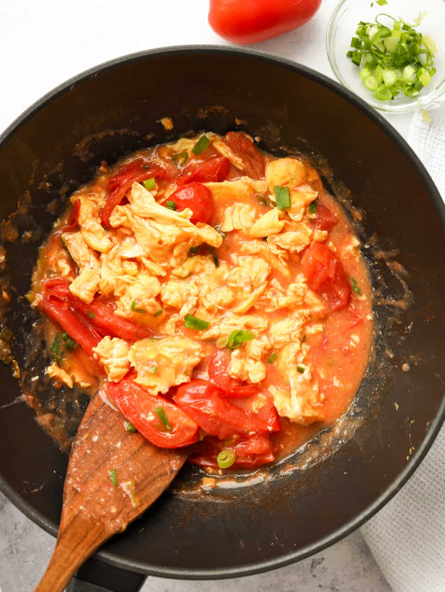
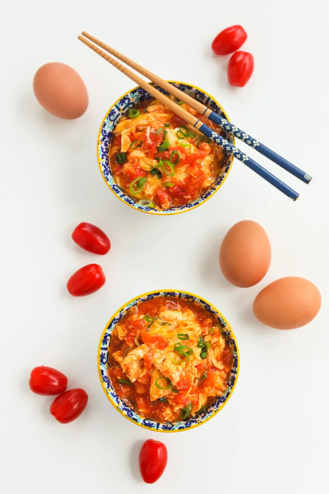

Double Chocolate Cookies
Origin: Michigan Source: Family Recipe Category: Dessert My daughter learned to make these cookies at a baking camp at Zingermanns and has tweaked the recipe to fit the taste buds of her siblings. They are extremely sugary so the salt helps to balance it. Note, these cookies are best eaten very quickly.
Recipe Ingredients
- Unsalted butter
- Granulated Sugar
- Packed light or dark brown sugar
- Large egg
- Pure vanilla extract
- Semi-sweet chocolate chunks (melted)
- All-purpose flour
- Natural unsweetened cocoa powder
- Baking soda
- Salt
- Semi-sweet chocolate chunks
Recipe Steps
- In a mixing bowl cream together the butter, granulated sugar, and brown sugar
- Add the egg and vanilla extract and beat well
- Add the melted chocolate
- In a separate bowl combine the flour, baking soda, cocoa powder and salt
- Combine the wet and dry ingredients
- Add the unmelted chocolate chunks.
- Form 15 cookies and place on a baking sheet.
- Cook for 12 to 13 minutes at 350 degrees.
Additional Food images


Chocolate Chip Banana Bread
Origin: American Source: Family Recipe Category: Dessert
This is a tried-and-tested recipe that I have used numerous times for making the perfect chocolate chip banana bread! Not only does it help utilize the bananas that have slowly overripened at the back of the fridge, it ends up creating an incredibly delicious, and relatively healthy, dessert.
Recipe Ingredients
- Cooking spray
- 2 cups (240 g) all-purpose flour
- 1 tsp. baking soda
- 1/2 tsp. kosher salt
- 1 large egg plus 1 egg yolk
- 1 cup (200 g) granulated sugar
- 1/2 cup (1 stick) unsalted butter, melted
- 1/4 cup sour cream
- 1 tsp. pure vanilla extract
- 1/2 cup chopped toasted walnuts
- 1/2 cup semisweet chocolate chips
Recipe Steps
- Preheat oven to 350º. Line a 9"-by-5" loaf pan with parchment and grease with cooking spray.
- In a medium bowl, whisk flour, baking soda, and salt.
- In a large bowl, mix egg, egg yolk, granulated sugar, butter, sour cream, and vanilla. Add bananas and stir until combined. Gradually add dry ingredients to banana mixture until just combined.
- Fold in walnuts and chocolate chips and transfer to prepared pan.
- Bake bread until a tester inserted into the center comes out clean, about 1 hour.
- Let cool 10 minutes in pan, then invert onto a wire rack and let cool completely.
Additional Food images


Chinese Stir-Fried Tomatoes and Eggs
Origin: China Source: Family Recipe Category: Garnish This is a classic recipe that almost everyone born in China will do
Recipe Ingredients
- 4eggs
- Kosher salt
- 1 tsp. baking soda
- 1/2 teaspoon sesame oil
- 1 tablespoon Shaoxing rice wine or dry sherry
- 1 teaspoon cornstarch
- 1 teaspoon sugar
- 2 tablespoons ketchup
- 1 pound beefsteak tomatoes in season
- 4 tablespoons vegetable oil
- 3 scallions, sliced
- 1 teaspoon minced ginger
- Steamed rice
Recipe Steps
- In a mixing bowl, beat the eggs well with 1 teaspoon salt, sesame oil and rice wine or sherry. In a small bowl, stir together the cornstarch and 2 tablespoons water until well combined, then stir in the sugar and ketchup.
- If using fresh tomatoes, core and cut them into ½-inch wide wedges.
- Heat a wide nonstick skillet over high heat with 3 tablespoons of vegetable oil. When the oil shimmers, add most of the scallions, saving some to garnish. Cook, stirring, until very aromatic, about 20 seconds. Add the eggs, and cook, stirring well with a spatula or chopsticks, until just set but still runny, about 45 seconds. Pour the eggs back into the mixing bowl, and wipe out the pan.
- Reheat the pan over high heat with the remaining tablespoon of oil. When it is hot, add the ginger and cook until aromatic, about 15 seconds. Add the tomatoes and salt to taste; cook, stirring occasionally, until the flesh has softened but still has some shape and the juices have begun to form a sauce, 2 to 3 minutes. (If using canned tomatoes, add the juice as well and cook about 4 minutes, to reduce it to a saucelike consistency.)
- Reduce the heat to medium. Give the cornstarch-ketchup mixture a stir in its bowl, then stir it into the pan. Cook, stirring, until the sauce returns to a boil and thickens. Taste and adjust seasoning with salt, sugar or more ketchup — you want a savory, tart-sweet sauce. Stir the eggs in the bowl to cut up the curds a bit, then return them to the pan. Cook, stirring, for a few seconds to finish cooking the eggs and to combine. Top with the reserved scallions, and serve with steamed rice.
Additional Food images


